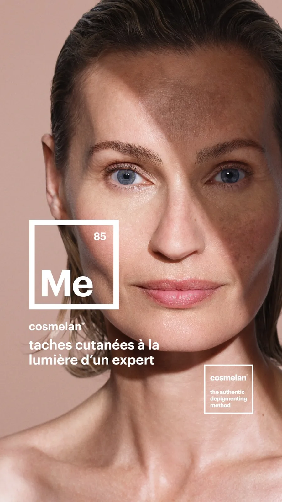
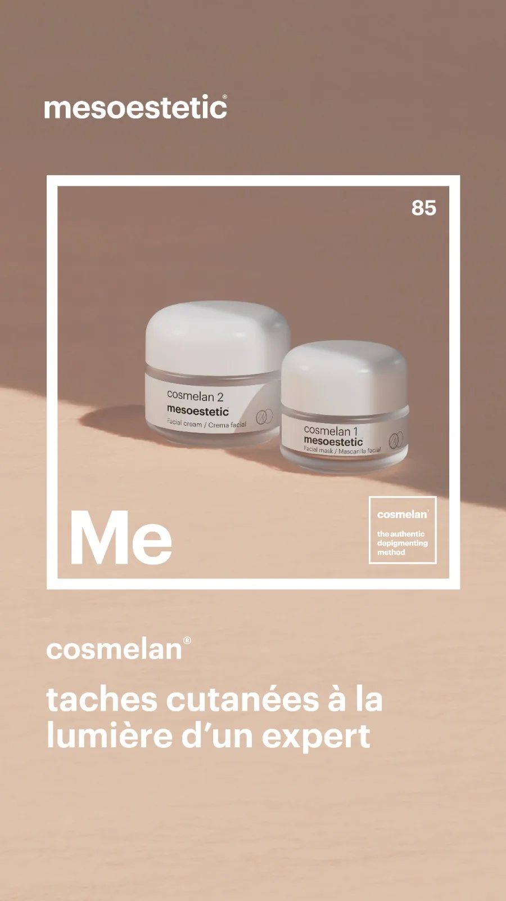

Les soins dépigmentants COSMELAN de LUMIA à Manosque s'adressent à celles et ceux qui veulent atténuer les taches du visage : mélasma, taches solaires, hyperpigmentation post-inflammatoire ou taches liées à l'âge. Le protocole COSMELAN de Mesoestetic agit en deux temps, en cabine puis à la maison, avec un suivi sur plusieurs mois. Tout commence par un diagnostic de peau obligatoire, déductible du soin, pour vérifier que votre peau est adaptée.

Comment agit le COSMELAN ?
Le COSMELAN a une double action : il estompe les taches déjà présentes et régule la production de mélanine pour limiter leur réapparition. C'est cette approche en deux temps qui en fait un protocole de fond, et non un simple gommage de surface. Aucun résultat n'est garanti, mais le protocole est reconnu pour son efficacité sur les hyperpigmentations.

Premier échange gratuit, réservez votre diagnostic
Le déroulé du protocole
Le parcours est cadré et accompagné de bout en bout.
- Diagnostic de peau obligatoire (déductible du soin) pour évaluer vos taches et votre peau.
- Phase 1, en cabine : application du masque dépigmentant COSMELAN 1, remise d'un home pack.
- Phase 2, à la maison : application du COSMELAN 2 et d'une routine adaptée, selon un protocole précis.
- Suivi mensuel sur environ six mois, pour ajuster et préserver les résultats.
Un soin apaisant post-COSMELAN est disponible pour accompagner la peau. La protection solaire quotidienne est indispensable pendant et après le protocole.

Questions fréquentes sur le COSMELAN
Pour quels types de taches le COSMELAN est-il adapté ?
Le protocole vise le mélasma, les taches solaires, l'hyperpigmentation post-inflammatoire et les taches liées à l'âge. Un diagnostic de peau préalable vérifie que votre type de taches s'y prête.
Combien de temps pour voir un résultat ?
Une amélioration du teint s'observe souvent dans les premières semaines. Le protocole complet s'étale sur environ six mois, avec un suivi mensuel, car régulariser la pigmentation demande du temps.
Y a-t-il une éviction sociale ?
Après la pose en cabine, la peau peut rougir et peler quelques jours, comme après un coup de soleil léger. On adapte le protocole à votre rythme de vie et on vous accompagne à chaque étape.
Quel entretien après le protocole ?
Une routine d'entretien à la maison et une protection solaire quotidienne sont indispensables pour préserver les résultats. Des soins ponctuels peuvent compléter l'entretien.
Quelle différence avec un peeling ou un laser ?
Le COSMELAN agit à la fois en estompant les taches et en régulant la production de mélanine, ce qui limite la réapparition. C'est un protocole dépigmentant progressif, distinct d'un peeling ponctuel ou d'un laser.
Le COSMELAN se prolonge naturellement avec nos soins du visage. Découvrez aussi la praticienne et les tarifs.